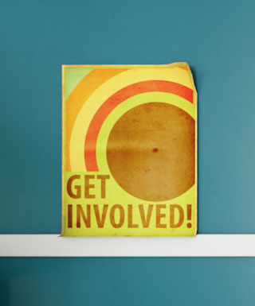
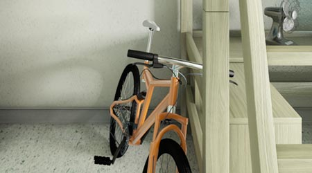

Iowa City and Coralville are home to many great second-hand, fair trade and organic clothing stores, so why buy new? http://www.icgov.org/site/CMSv2/file/solidWaste/consignmentDir.pdf If you really want a change in your sartorial style, organize a frock swap or treasure trade on your floor.
Check out used room furnishings from the many stores in Iowa City and Coralville. The UI also runs a great surplus shop http://www.uiowa.edu/uisurplus/ where you can buy gently used furniture, equipment and even athletic apparel.
If you have any usable furniture, clothes, housewares, unopened food items or unused personal care items at the end of the academic year, they can be donated to the UI's move-out program.
If you need a fridge in your room, make sure you don't have one for each person –share one fridge instead.
If you must bring appliances to campus please make sure they're Energy Star products.

Stay in touch with your Resident Assistant and residence hall governance to talk about any issues and to ensure student housing is green, safe and welcoming.
Start or join a green team on your floor to promote sustainable practices.
Always contact hall coordinators if you have any problems with your room temperature or if you notice water leaks or lighting outages. http://housing.uiowa.edu/contactus.htm
Try using a fan instead of turning on the AC. If you must turn on the AC, make sure to use the energy-saving mode. Consider turning the temperature control "up" on the AC unit (or turn it off completely) when the room is vacant. Makes sure to turn the personal fans "off" when you leave the room.

Get active: bike or walk to class. Take the stairs instead of the elevator.
Learn about the UI sort-free recycling program and use your blue recycling bin every day to reduce landfilled waste. http://sustainability.uiowa.edu/sort-free-recycling/. Empty in the large bins in the waste room on your floor.
{kind=link}
{kind=link}
{kind=link}
{kind=link}
{kind=link}
{kind=link}
{kind=link}
{kind=link}
{kind=link}
{kind=link}